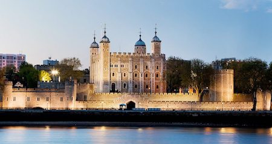
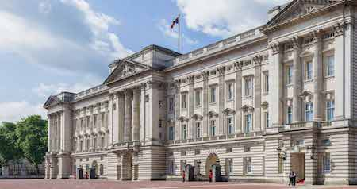
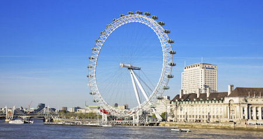
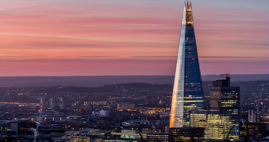

London Travel Guide
Places to visit
Tower of London
This old fortress is well over 1000 years old and has tradtions dating back to the year 1200. History and storys of days gone by pour out of place. With guided tours and help always at hand, this is a must.
Opening Hours
- Mon 10:00am - 5:30pm
- Tue 9:00am - 5:30pm
- Wed 9:00am - 5:30pm
- Thu 9:00am - 5:30pm
- Fri 9:00am - 5:30pm
- Sat 9:00am - 5:30pm
- Sun 10:00am - 5:30pm
Entry Fee
- Members - Free
- Adult - £22.70
- Child - £10.75
- Concessions - £17.70
- Family - £40.80
- Under 5's - Free
- Groups - Varies
Buckingham Palace Tour
Bucking Palace is known all over the world, with Her Majesty Queen Elizibeth II in residence who wouldn't want to see how the royals live. A tour is available for Her Majesty's State Rooms.
Opening Hours
- Mon 9.30am - 7:30pm
- Tue 9.30am - 7:30pm
- Wed 9.30am - 7:30pm
- Thu 9.30am - 7:30pm
- Fri 9.30am - 7:30pm
- Sat 9.30am - 7:30pm
- Sun 9.30am - 7:30pm
Entry Fee
- Members - Free
- Adult - £42.30
- Family - £107.90
- Under 17's - Free
- over 60/Student - £38.50
London Eye
The London Eye offers spectacular views of London. At 130 meters high and right on the river Thames, you will see a veiw of London most people won't see. Very much worth the wait and cost.
Opening Hours
- Mon 10:00am - 8:30m
- Tue 10:00am - 8:30m
- Wed 10:00am - 8:30m
- Thu 10:00am - 8:30m
- Fri 10:00am - 8:30m
- Sat 10:00am - 8:30m
- Sun 10:00am - 8:30pm
Entry Fee
- Adult - £27.00
- Child - £22.00
- Fast Track
- Adult - £37.00
- Child - £32.00
- Champagne Experience
- For Two - £41.00
The Shard
The Shard is 309.6 metres high and is the tallest building in Europe. Catch the sunset from across London with a glass of champagne (if you wish) and watch the nightlife of london go by.
Summer Opening Hours
- Mon 10:00am - 10:00pm
- Tue 10:00am - 10:00pm
- Wed 10:00am - 10:00pm
- Thu 10:00am - 10:00pm
- Fri 10:00am - 10:00pm
- Sat 10:00am - 10:00pm
- Sun 10:00am - 10:00pm
Entry Fee
- Standard
- Adult - £24.50
- Child - £19.95
- Champagne Experience
- Per Adult - £11.00